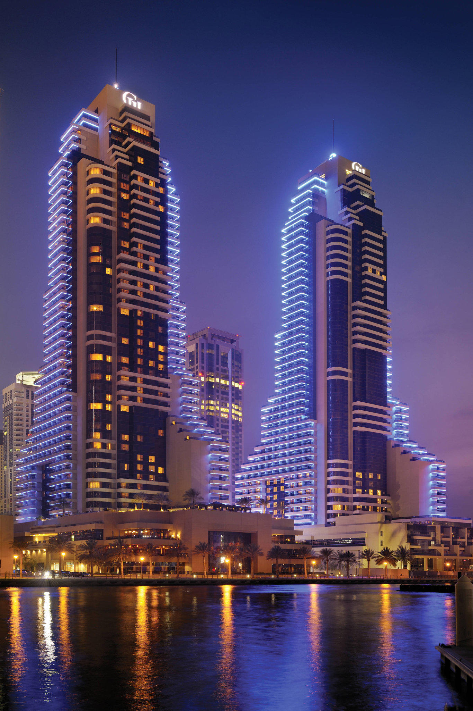
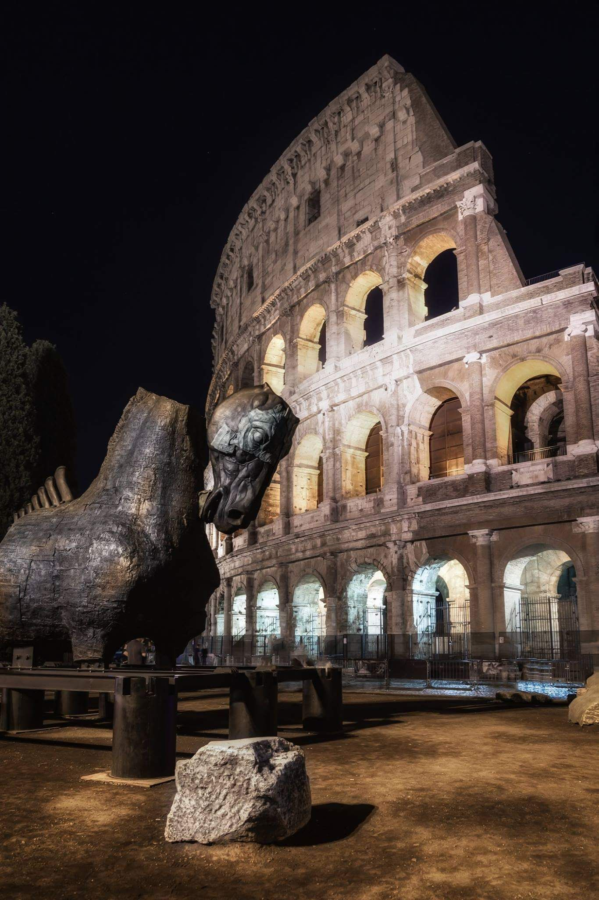
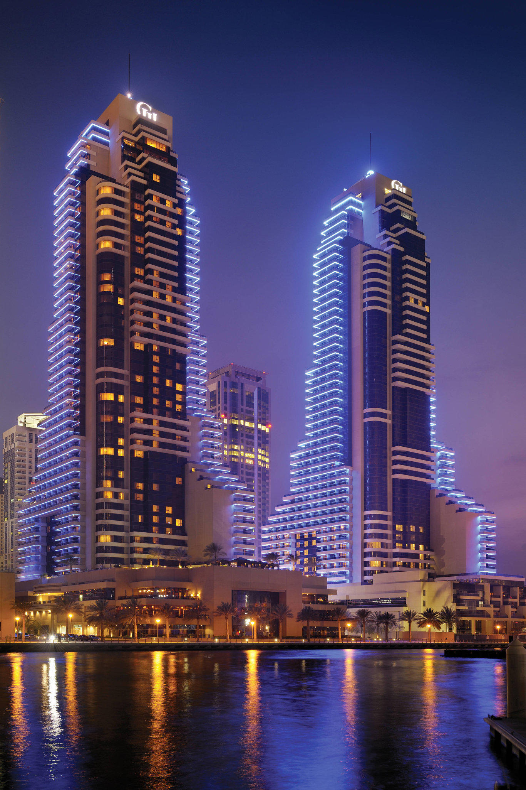
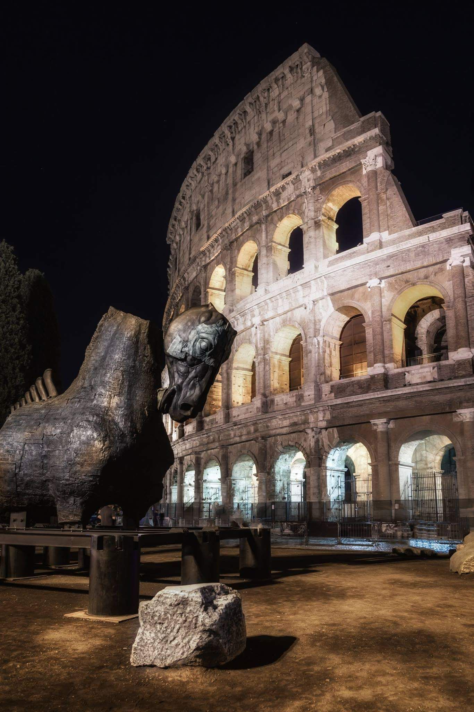
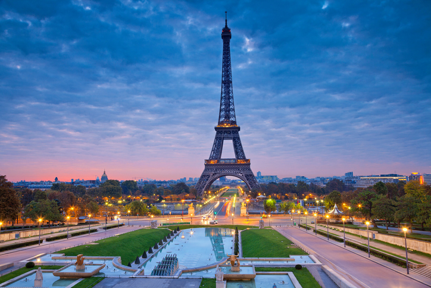
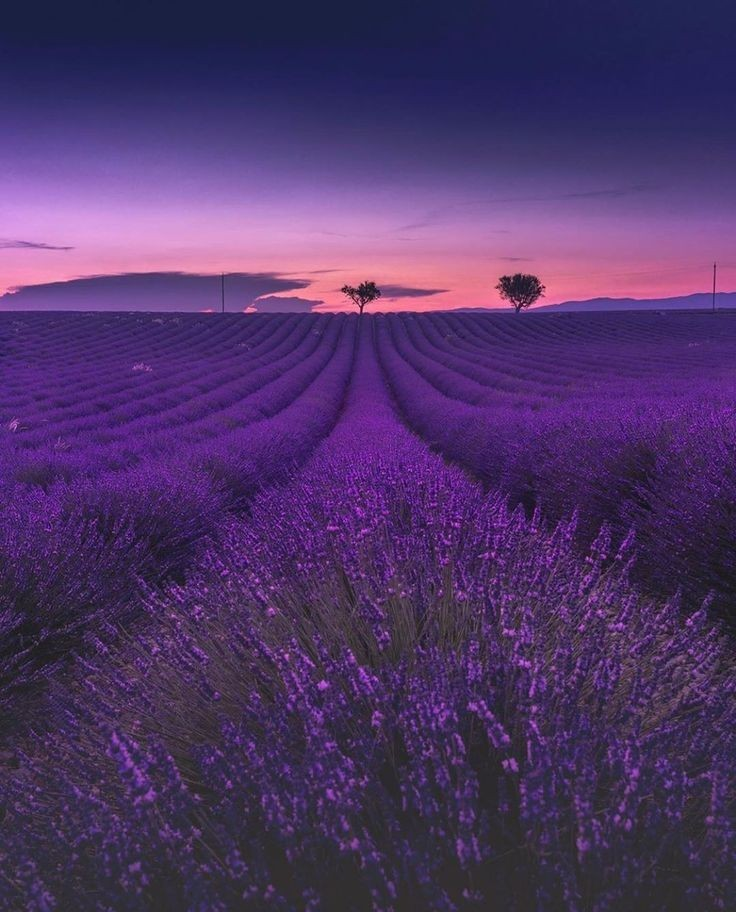
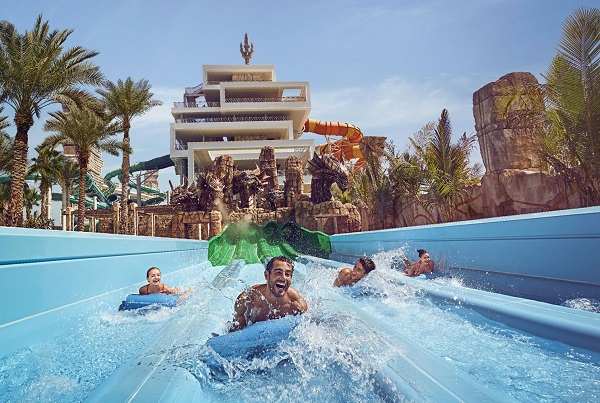
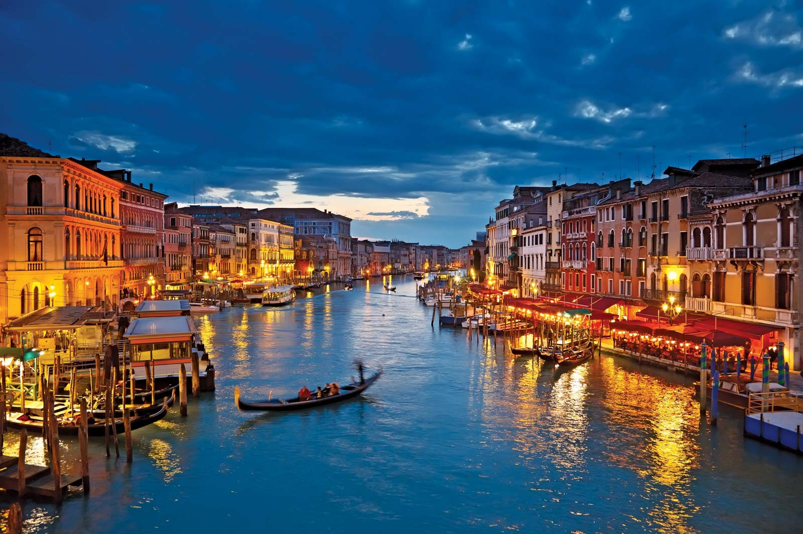
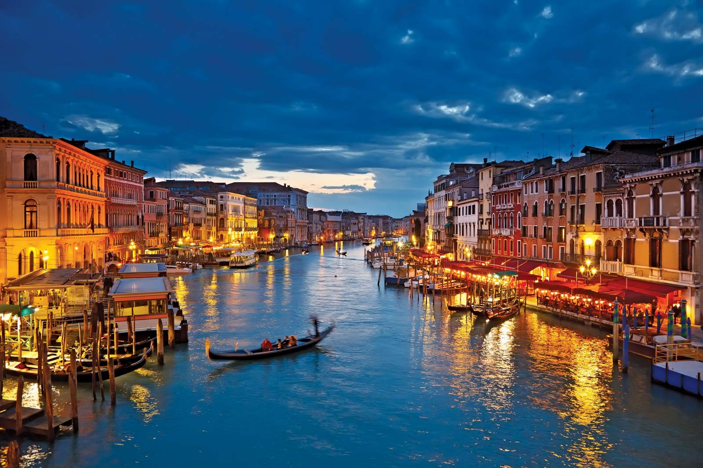

FRANCIS LOUIE ANTONIO


I want to travel to Hawaii because I want to experience
the beach in hawaii
I want to travel to Dubai to
see their beautiful buildings
and city
I want to Greenland to see this Northern Lights
I want to travel to Boracay with my family and friends
I want to travel to Japan and to learn their culture
Activities & Event in each destination.


Hawaii
Whale Watching is quite certainly one of the best things to do in Hawaii and an invaluable experience that will not be soon forgotten!
Aboard a modern snorkeling vessel, visitors will surely enjoy being an eye witness to the beauty of of an array of Hawaiian marine life.


Dubai, U.A.E.
Get a spectacular birds-eye view of all the attractions in Dubai on the 125th-floor observation deck at The Burj Khalifa, the tallest building in the city and the world.
Because of how massive this mall is, you can also find entertaining activities such as an ice rink, an aquarium, an indoor fountain, to a grand cinema complex.


The northern lights is Greenland’s way of adding an extra bonus to the adventures of winter. It is free, there is enough for everyone and all it takes is for you to dress warmly, wear a sturdy pair of boots, add an ounce of patience, maybe carry with you a thermos of coffee, and then have someone there to share the adventure.
Winter in Greenland opens up new worlds and new trails across an otherwise roadless land, and the snowy season actually has more options for travelling through the country than you might immediately expect.
Boracay Parasailing
Take off on a single or tandem parasailing ride and witness the breathtaking view of Boracay's coastline. This adrenaline p acked experience will allow you to enjoy the best views the island has to offer while being pulled by a boat. If you're feeling nervous, go on a tandem parasail with a friend and feel your worries melt away as you enjoy the view.
Boracay Sunset Cruise Experience
Enjoy the picturesque scenery in this 2-hour cruise around the area. Accompanied by friendly crew members, the entire cruise is a visually stunning trip around the island. Watch the sky turn into a brilliant crimson orange as the sun sets in the horizon. During the cruise, you can see where the locals feast or enjoy fun-filled activities such as stand-up paddle boarding, snorkeling, and more!.


Go-karting is our pick for the most fun thing to do in Japan! Where else in the world can you dress up as your favourite character and drive go-karts on the real streets of a major city?

The most popular way to enjoy the blossoms is with a picnic under the trees. The Japanese gather in large groups with food and drinks for parties that often last all day and into the night.

Universal Studios Japan in Osaka is a must for Harry Potter and theme park fans. The highlight is the immersive Wizarding World of Harry Potter where you can wander the snowy cobbled streets, stroll through Hogwarts, drink butterbeer, shop for sweets in Honeydukes, and even cast your own spells if you buy a magic wand.

NICOLAS N. PONCE III
  
 

I want to travel to Hawaii because I want to experience
the beach in hawaii
I want to travel to Hawaii because I want to experience
the beach in hawaii
I want to travel to Hawaii because I want to experience
the beach in hawaii
I want to travel to Hawaii because I want to experience
the beach in hawaii
I want to travel to Hawaii because I want to experience
the beach in hawaii
Activities & Event in each destination.


France
Seeing the eiffel tower will be a mesmorizing and unforgettable experience for me and for anyone because it's one incredible engineering feat for engineers.
The incredible stretch of lavender into the distance makes any people in awe with it's gorgeous consistency and formations and of course it's beautiful color.


Dubai, U.A.E.
This non-stop aquatic playground features over twenty million gallons of water, magnificent Atlantean-themed towers housing high-speed water slides, a mile-long river ride with rolling rapids and 11 refreshing swimming pools.
I personally want to experience this activity whenever i get a chance to because maybe i am a car ethusiats and i want to feel or see the cars tackle the large sand dunes of Dubai
 

The Colosseum was built as part of an imperial effort to revitalize Rome after the tumultuous year of the four emperors, 69 CE. As with other amphitheatres, the emperor Vespasian intended the Colosseum to be an entertainment venue, hosting gladiator fights, animal hunts, and even mock naval battles
Grand Canal, Italian Canale Grande, main waterway of Venice, Italy, following a natural channel that traces a reverse-S course from San Marco Basilica to Santa Chiara Church and divides the city into two parts i really like to go here because there is a mock grand canal in the country but i want to see and experience the real one.
Boracay Parasailing
Take off on a single or tandem parasailing ride and witness the breathtaking view of Boracay's coastline. This adrenaline p acked experience will allow you to enjoy the best views the island has to offer while being pulled by a boat. If you're feeling nervous, go on a tandem parasail with a friend and feel your worries melt away as you enjoy the view.
Boracay Sunset Cruise Experience
Enjoy the picturesque scenery in this 2-hour cruise around the area. Accompanied by friendly crew members, the entire cruise is a visually stunning trip around the island. Watch the sky turn into a brilliant crimson orange as the sun sets in the horizon. During the cruise, you can see where the locals feast or enjoy fun-filled activities such as stand-up paddle boarding, snorkeling, and more!.
Ramen houses are type of small restaurant's that mostly the main dish are different types of ramen. I really want to experience eating in ramen houses in japan and tastes their traditional ramens that's one of my bucket list.
Springtime in Japan is nothing less than magical. From late March to mid-April, or even early May, the country's iconic sakura (cherry blossoms) capture the attention of visitors and locals as their beautiful flowers blanket the country in soft pink splendor and i want to see this personally because i also saw these in animes or even some movies.

One of the most beautiful Volcanos in the whole world is mount fuji located in japan some people might think that mount fuji is a mountain but it's a active volcano that can erupt in anytime but all those things are shadowed by how beautiful fuji is.
↠ Copyright © 2022 Nicolas N. Ponce III & Francis Louie Antonio | ALL RIGHTS RESERVED ↞